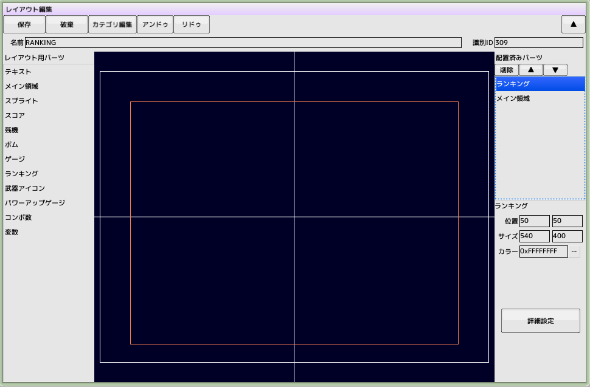
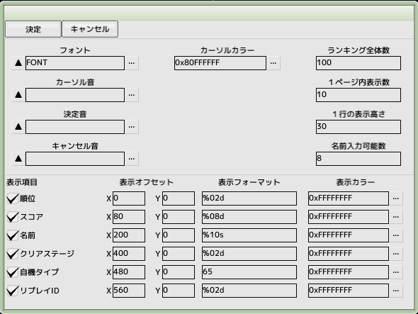
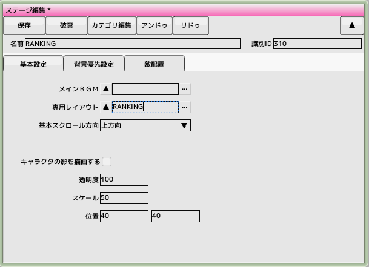
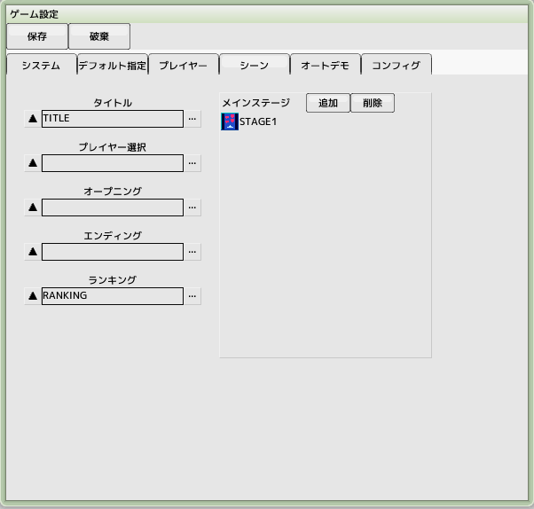

back to the original page
back to the original page
14. Create a ranking screen

Create layout for ranking
Create a new layout from the project and name it 'RANKING'
Extend the size of the main area to the fullest
Drag and drop the ranking from among the layout parts on the screen
Move the ranking of placed parts to the top (high priority)
Set the position and size, and then move on to advanced settings

Advanced Ranking Settings
Leave all defaults, just specify the font

Create a stage for ranking
Create a new stage from the project and name it 'RANKING'
Set the 'RANKING' you just created for the dedicated layout

Ranking game settings and testing
Register 'RANKING' from the Scenes tab of the game settings to the ranking
Run a playthrough test
From the title screen, press the C key to go to the ranking screen
Return to the title with the X key
Recording a high score in a pass-through play will take you to the name entry scene
Replays are then recorded and can be replayed with the Z key on the ranking screen
Back to top of page